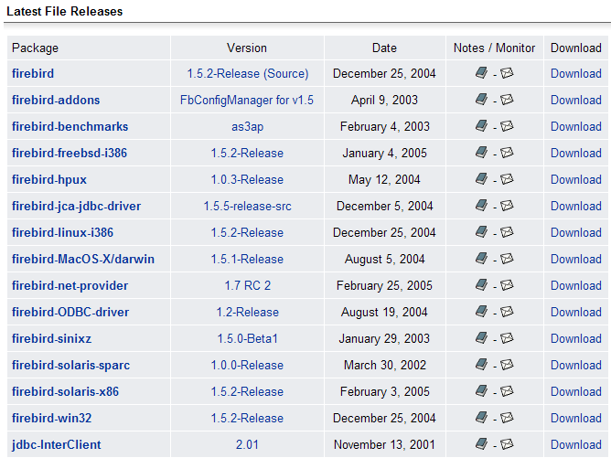
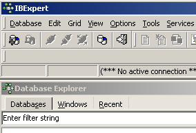
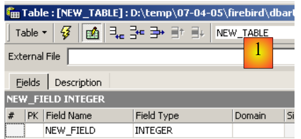
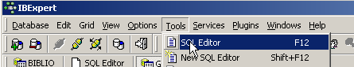
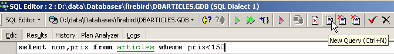
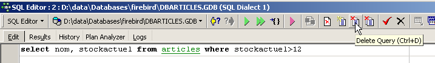
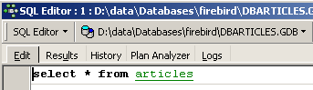
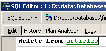

2. Firebird Tutorial
Before covering the basics of the SQL language, we will show the reader how to install the Firebird DBMS as well as the IB-Expert graphical client.
2.1. Where to find Firebird?
The main Firebird website is [http://firebird.sourceforge.net/]. The downloads page offers the following links (April 2005):

You will download the following items:
the DBMS for Windows | |
a class library for .NET applications that allows access to the DBMS without using an ODBC driver. | |
the Firebird ODBC driver |
Install these components. The DBMS is installed in a folder with contents similar to the following:
 |
The binaries are in the [bin] folder:
 |
allows you to start/stop the DBMS | |
command-line client for managing databases |
Note that by default, the DBMS administrator is named [SYSDBA] and the password is [masterkey]. Menus have been added to [Start]:

The [Firebird Guardian] option allows you to start/stop the DBMS. After startup, the DBMS icon remains in the Windows taskbar:
 |  |
To create and manage Firebird databases using the command-line client [isql.exe], you must read the documentation included with the product in the [doc] folder.
2.2. Firebird documentation
Documentation on Firebird and the SQL language can be found on the Firebird website (January 2006):

Various manuals are available in English:
to get started with FB | |
to understand the error codes returned by FB |
SQL training manuals are also available:

to learn how to create tables, what data types are available, ... | |
the reference guide for learning SQL with Firebird |
A quick way to work with Firebird and learn SQL is to use a graphical client. One such client is IB-Expert, described in the following section.
2.3. Working with the Firebird DBMS using IB- Expert
The main IB-Expert website is [http://www.ibexpert.com/]. The downloads page offers the following links:

Select the free version [Personal Edition]. Once downloaded and installed, you will have a folder similar to the following:

The executable file is [ibexpert.exe]. A shortcut is normally available in the [Start] menu:

Once launched, IBExpert displays the following window:

Use the [ Database/Create Database] option to create a database:
can be [local] or [remote]. Here, our server is on the same machine as [IBExpert]. We therefore select [local] | |
Use the [folder] button in the dropdown to select the database file. Firebird stores the entire database in a single file. This is one of its advantages. You can transfer the database from one computer to another by simply copying the file. The [.gdb] suffix is added automatically. | |
SYSDBA is the default administrator for current Firebird distributions | |
masterkey is the password for the SYSDBA administrator in current Firebird distributions | |
The SQL dialect to use | |
If this box is checked, IBExpert will display a link to the database after it has been created |
If, when clicking the [OK] button to create the database, you see the following warning:

it means you haven't started Firebird. Start it. A new window will appear:

Character set to use. Although the screenshot above does not show any information, it is recommended to select the [ISO-8859-1] set from the drop-down list, which allows the use of accented Latin characters. |
[IBExpert] can handle various DBMSs derived from Interbase. Select the version of Firebird you have installed:  |
Once this new window is confirmed by clicking [Register], you will see the following result:

To access the database you created, simply double-click its link. IBExpert will then display a tree view providing access to the database properties:

2.4. Creating a Data Table
Let’s create a table. Right-click on [Tables] (see window above) and select the [New Table] option. This opens the window for defining the table’s properties:
 |
Let’s start by naming the table [ARTICLES] using the input field [1]:
 |
Use the input field [2] to define a primary key [ID]:
 |
A field is made a primary key by double-clicking the [PK] (Primary Key) field. Let’s add fields using the button above [3]:

Until we have "compiled" our definition, the table is not created. Use the [Compile] button above to finalize the table definition. IBExpert prepares the SQL queries to generate the table and asks for confirmation:

Interestingly, IBExpert displays the SQL queries it has executed. This allows you to learn both the SQL language and any proprietary SQL dialect that may be used. The [Commit] button validates the current transaction, while [Rollback] cancels it. Here, we accept it by clicking [Commit]. Once this is done, IBExpert adds the created table to our database tree:

By double-clicking on the table, we can access its properties:

The [Constraints] panel allows us to add new integrity constraints to the table. Let’s open it:

We see the primary key constraint we created. We can add other constraints:
- foreign keys [Foreign Keys]
- field integrity constraints [Checks]
- field uniqueness constraints [Uniques]
Let’s specify that:
- the fields [ID, PRICE, CURRENTSTOCK, MINIMUMSTOCK] must be >0
- the [NAME] field must be non-empty and unique
Open the [Checks] panel and right-click in the constraint definition area to add a new constraint:

Let’s define the desired constraints:

Note above that the constraint [NAME<>''] uses two single quotes, not double quotes. Compile these constraints using the [Compile] button above:

Once again, IBExpert demonstrates its user-friendliness by displaying the SQL queries it has executed. Let’s now move to the [Constraints/Unique] panel to specify that the name must be unique. This means that the same name cannot appear twice in the table.

Let’s define the constraint:

Then let’s compile it. Once that’s done, open the [DDL] (Data Definition Language) panel for the [ARTICLES] table:

This panel displays the SQL code for generating the table with all its constraints. You can save this code in a script to run it later:
SET SQL DIALECT 3;
SET NAMES NONE;
CREATE TABLE ARTICLES (
ID INTEGER NOT NULL,
NAME VARCHAR(20) NOT NULL,
PRICE DOUBLE PRECISION NOT NULL,
CURRENTSTOCK INTEGER NOT NULL,
MINIMUM_STOCK INTEGER NOT NULL
);
ALTER TABLE ARTICLES ADD CONSTRAINT CHK_ID check (ID>0);
ALTER TABLE ARTICLES ADD CONSTRAINT CHK_PRICE check (PRICE>0);
ALTER TABLE ARTICLES ADD CONSTRAINT CHK_CURRENT_STOCK check (CURRENT_STOCK > 0);
ALTER TABLE ARTICLES ADD CONSTRAINT CHK_STOCKMINIMUM check (STOCKMINIMUM>0);
ALTER TABLE ARTICLES ADD CONSTRAINT CHK_NAME check (NAME<>'');
ALTER TABLE ARTICLES ADD CONSTRAINT UNQ_NAME UNIQUE (NAME);
ALTER TABLE ARTICLES ADD CONSTRAINT PK_ARTICLES PRIMARY KEY (ID);
2.5. Inserting data into a table
It is now time to enter data into the [ARTICLES] table. To do this, use its [Data] panel:

Data is entered by double-clicking on the input fields of each row in the table. A new row is added using the [+] button, and a row is deleted using the [-] button. These operations are performed within a transaction that is committed using the [Commit Transaction] button (see above). Without this commit, the data will be lost.
2.6. The [IB-Expert] SQL Editor
The SQL (Structured Query Language) allows a user to:
- create tables by specifying the data type they will store and the constraints that the data must satisfy
- insert data into them
- modify certain data
- delete other data
- use the data to retrieve information
- ...
IBExpert allows users to perform operations 1 through 4 graphically. We just saw that. When the database contains many tables, each with hundreds of rows, we need information that is difficult to obtain visually. Suppose, for example, that an online store has thousands of customers per month. All purchases are recorded in a database. After six months, it is discovered that product “X” is defective. The store wants to contact everyone who purchased it so they can return the product for a free exchange. How can the addresses of these buyers be found?
- You could manually go through all the tables and search for these buyers. That would take a few hours.
- We can run an SQL query that will return a list of these people in a matter of seconds
SQL is useful whenever
- the amount of data in the tables is large
- there are many tables linked together
- the information to be retrieved is spread across multiple tables
- ...
We will now introduce IBExpert’s SQL Editor. It can be accessed via the [Tools/SQL Editor] option or by pressing [F12]:

This gives you access to an advanced SQL query editor where you can run queries. Let’s type a query:

Execute the SQL query using the [Execute] button above. You will get the following result:

Above, the [Results] tab displays the result table for the [Select] SQL statement. To issue a new SQL command, simply return to the [Edit] tab. You will then see the SQL statement that was executed.

Several buttons on the toolbar are useful:
- The [New Query] button allows you to move on to a new SQL query:

This brings up a blank editing page:

You can then type a new SQL statement:

and execute it:

Let’s return to the [Edit] tab. The various SQL statements issued are stored by [IB-xpert]. The [Previous Query] button allows you to return to a previously issued SQL statement:

You are then returned to the previous query:

The [Next Query] button allows you to go to the next SQL statement:

You will then see the next SQL statement in the list of stored SQL statements:

The [Delete Query] button allows you to delete an SQL statement from the list of stored statements:

The [Clear Current Query] button clears the contents of the editor for the displayed SQL query:

The [Commit] button allows you to permanently save the changes made to the database:

The [RollBack] button allows you to undo the changes made to the database since the last [Commit]. If no [Commit] has been made since connecting to the database, then the changes made since that connection are undone.

Let’s look at an example. Let’s insert a new row into the table:

The SQL statement is executed but nothing is displayed. We don’t know if the insertion took place. To find out, let’s execute the following SQL statement [New Query]:

We get the following result:

The row has indeed been inserted. Let’s examine the table’s contents in another way now. Double-click the [ARTICLES] table in the database explorer:
We get the following table:

The button with the arrow above allows you to refresh the table. After refreshing, the table above does not change. It appears that the new row was not inserted. Let’s return to the SQL editor (F12) and then commit the SQL statement using the [Commit] button:

Once this is done, let’s return to the [ARTICLES] table. We can see that nothing has changed, even when using the [Refresh] button:
Above, open the [Fields] tab, then return to the [Data] tab. This time, the inserted row appears correctly:

When the execution of the various SQL statements begins, the editor opens what is called a transaction on the database. The changes made by these SQL statements in the SQL editor will only be visible as long as you remain in the same SQL editor (you can open multiple instances). It is as if the SQL editor were working not on the actual database but on its own copy. In reality, this is not exactly how it works, but this analogy can help us understand the concept of a transaction. All changes made to the copy during a transaction will only be visible in the actual database once they have been committed via a [Commit Transaction]. The current transaction is then terminated, and a new transaction begins.
Changes made during a transaction can be undone by an operation called [Rollback]. Let’s try the following experiment. Let’s start a new transaction (simply [Commit] the current transaction) with the following SQL statement:

Let’s execute this command, which deletes all rows from the [ARTICLES] table, and then execute [New Query] with the following new SQL command:

We get the following result:

All rows have been deleted. Remember that this was done on a copy of the [ARTICLES] table. To verify this, double-click on the [ARTICLES] table below:
and view the [Data] tab:

Even if we use the [Refresh] button or switch to the [Fields] tab and then back to the [Data] tab, the content above remains unchanged. This has been explained. We are in another transaction that is working on its own copy. Now let’s return to the SQL editor (F12) and use the [RollBack] button to undo the row deletions that were made:

We are asked for confirmation:

Let’s confirm. The SQL editor confirms that the changes have been rolled back:

Let’s run the SQL query above again to verify. The rows that had been deleted are now back:

The [Rollback] operation has restored the copy that the SQL editor is working on to the state it was in at the beginning of the transaction.